Cette application sert à calculer automatiquement les points d'une partie de Mahjong avec les règles MCR.
Cette application est optimisée pour mobile afin de noter rapidement des scores.
Cette application se limite aux parties :
Pour une expérience optimale, il est recommandé d'installer en tant qu'application mobile.
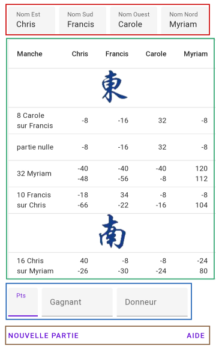
La vue est composée :
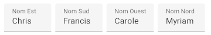
Le nom des quatre joueurs est nécessaire pour procéder à la saisie des points.
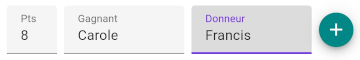
Les différents modes de saisie possibles sont :
Le bouton + n'apparaît que lorsque la saisie est complète et valide.
Cliquer sur ce bouton + pour valider la manche et l'ajouter au tableau des points.
Lorsqu'une manche est enregistrée, il est possible de la ré-éditer pour effectuer une correction.
Pour cela il faut cliquer sur la ligne à corriger dans le tableau de score.
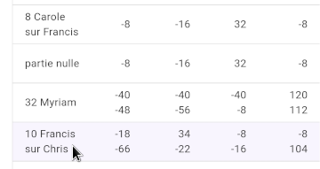
La ligne devient surlignée et il est possible de changer toutes les caractéristiques de la manche.
Cliquer sur la disquette pour enregistrer.
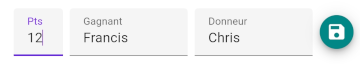
A la fin d'une partie, ou même durant une partie inachevée il est possible de faire une nouvelle partie.
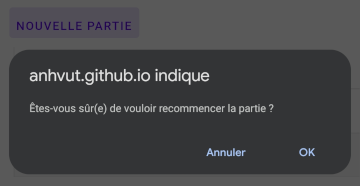
Cliquer sur le bouton "Nouvelle partie" et valider pour abandonner la partie en cours.
Il est possible d'installer cette application en tant qu'application mobile à part sur Android, iOS ou même PC.
Ceci est possible grâce à la technologie PWA (Progressive Web Application) disponible sur les navigateurs modernes. Cette installation ne passe pas par le Play Store d'Android ou l'App Store d'iOS.
Outre la possibilité de retrouver rapidement l'application, le principal avantage est de pouvoir utiliser l'application en mode hors ligne. Toutefois si l'application est démarrée avec une connexion internet disponible et une mise à jour est disponible de l'application, l'application mobile est alors automatiquement mise à jour.
L'affichage peut varier suivant le modèle de mobile et le navigateur. Le site peut proposer d'installer l'application dans un bandeau ou bien dans le menu contextuel 3 points verticaux.
Bandeau sur Chrome.
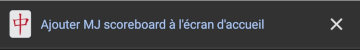
Menu contextuel sur Chrome.
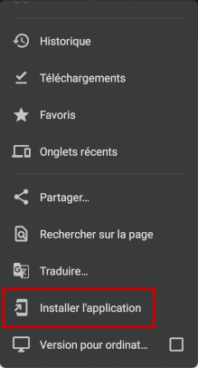
Menu contextuel sur Firefox.
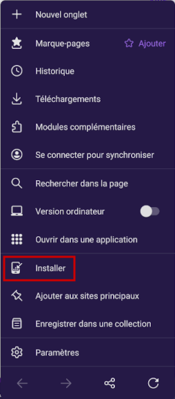
Menu partager sur Safari.
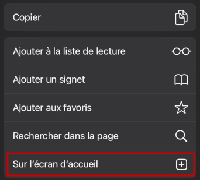
Après validation, l'application est disponible sur l'écran d'accueil du mobile.
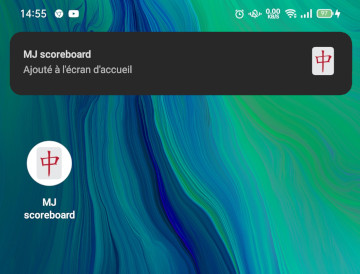
Pour toute remarque sur l'application, veuillez créer une "issue" ou même "pull-request" sur https://github.com/anhvut/mj-scoreboard
Cette application est sous licence MIT. Cela signifie que vous êtes libre d'utiliser l'application, l'étudier, modifier, redistribuer.
Par contre, vous utilisez l'application telle quelle sans garantie. L'auteur ne pourrait être tenu responsable de tout dysfonctionnement. L'application n'est pas conçue pour avantager un joueur en particulier !